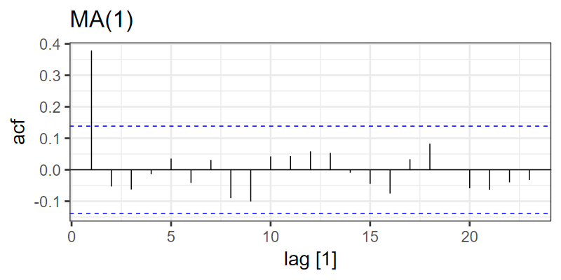
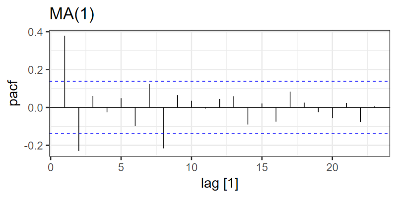

Time-Series Analysis
EES 4891/5891
Probability & Statistics for Geosciences
Jonathan Gilligan
Class #26: Thursday, April 10 2025
Moving-Average Processes
-
MA(1): Order-1 moving-average process:
\[ \begin{align} z_t &= \mu + \theta \varepsilon_{t-1} + \varepsilon_t \\ \varepsilon_t &\sim \mathcal{N}(0, \sigma) \end{align} \]
-
\(\theta\) represents a “filter coefficient”.
- The random part of each value is a weighted average of the previous noise terms plus a new noise term.

ACF
- ACF: autocorrelation function
For each lag \(k\), calculate the autocorrelation of \(z_t\) with \(z_{t - k}\)
-
Plot the autocorrelation:
-
The blue dashed lines show the uncertainties.
- ACF outside the lines is statistically significant
- For MA(q), only the first q lags are significant.


PACF
- Partial autocorrelation function
For each lag, calculate the autocorrelation after subtracting the autocorrelation from the previous lags
-
For AR(p), only the first p lags are significant.


Box-Jenkins: Examine ACF and PACF
-
Signature of AR(1):
-
Signature of AR(1):